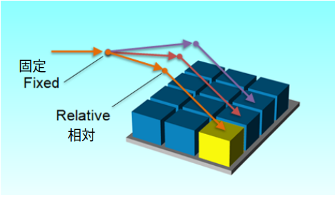
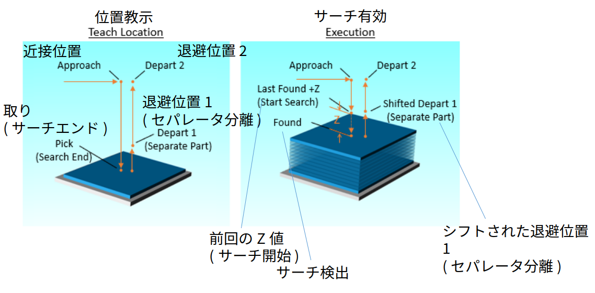
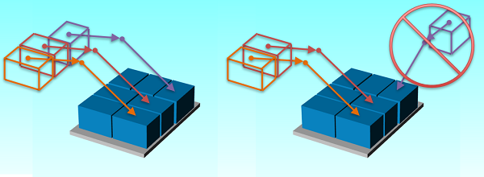
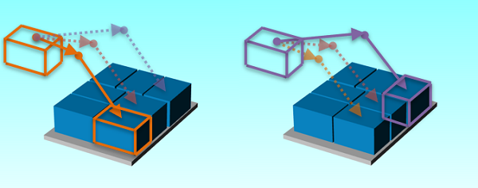

このセクションでは、ステーションの製品を扱うための経路(パス)を教えることができます。
経路は複数の動作で構成されています: 近接、取り/置き、退避 動作ごとに、位置(教示点)、動作種類、位置タイプ、速度を入力できます。 経路は、同じルールで他の部分を扱うためににシフトされます。 前画面で指定した近接位置・退避位置の数に応じて設定が必要になります。 前の画面で「逆アプローチ」オプションを選択した場合、ユーザーは 近接と取り/置き位置を入力するだけで良いです。 このオプションを有効にすると、出発タブに逆アプローチの通知が表示されます。
デフォルトでは、アプリケーションは選択した製品とステーションタイプに基づいて教示点を提案します。 ただし、上書きすることもできます。動作タイプ: 教示点に移動する動作タイプ - Joint Move(ジョイント補間)、Linear Move (直線直線) Linear Move の "%" は、線形速度をmm/s ではなく、最大速度のパーセンテージとして定義します。
速度: 動作が実行される速度。 「Joint Move」と「Linear Move (%)」、速度は最大速度のパーセンテージとして指定されます。「Linear Move (%)」 の速度は50% 以上で設定してください。 「Linear Move」の場合、速度は mm/s で定義されます。
位置タイプ: 位置(教示点)は「固定」または「相対」に分類できます。

位置(教示点): 参照しているステーションのユーザ座標系に対する位置(教示点)。 位置は座標 (X、Y、Z) とツールの向き (Rx、Ry、Rz)によって定義されます。
タブを選択し、位置(教示点)を教えます: 近接、取り/置き、退避 次に、ロボットを希望する位置まで動かします。 希望の位置に移動したら、[教示] を押して現在の位置を記録します。 他の位置(教示点)についても繰り返します。
位置を確認するには、[教示位置に移動] を押して、位置移動パネルに [目標] 位置を表示します。 位置移動パネルの「教示点へ移動」を押して、ロボットを目標位置に移動します。
ディスペンサー(センサ使用)
ディスペンサー(センサ使用)は通常、取り位置の真上に近接位置が必要です。これによりサーチの方向が定義されます。 次に、少なくとも 2 つの退避位置を真上にします。1つ目の退避位置は、ピッキングされた製品をスタックから分離するために使用される低速での短い動きです。 2 番目の退避位置は、別のステーションに移動する前にディスペンサー側をクリアすることです。

積付ステーション - 製品(箱)
製品(箱)を含む積付レイアウト(段)の場合、製品(箱) 1 の位置を教える必要があります。 さらに、製品(箱)が、最初の製品(箱)に対して相対的に回転すると、次のようになります。

